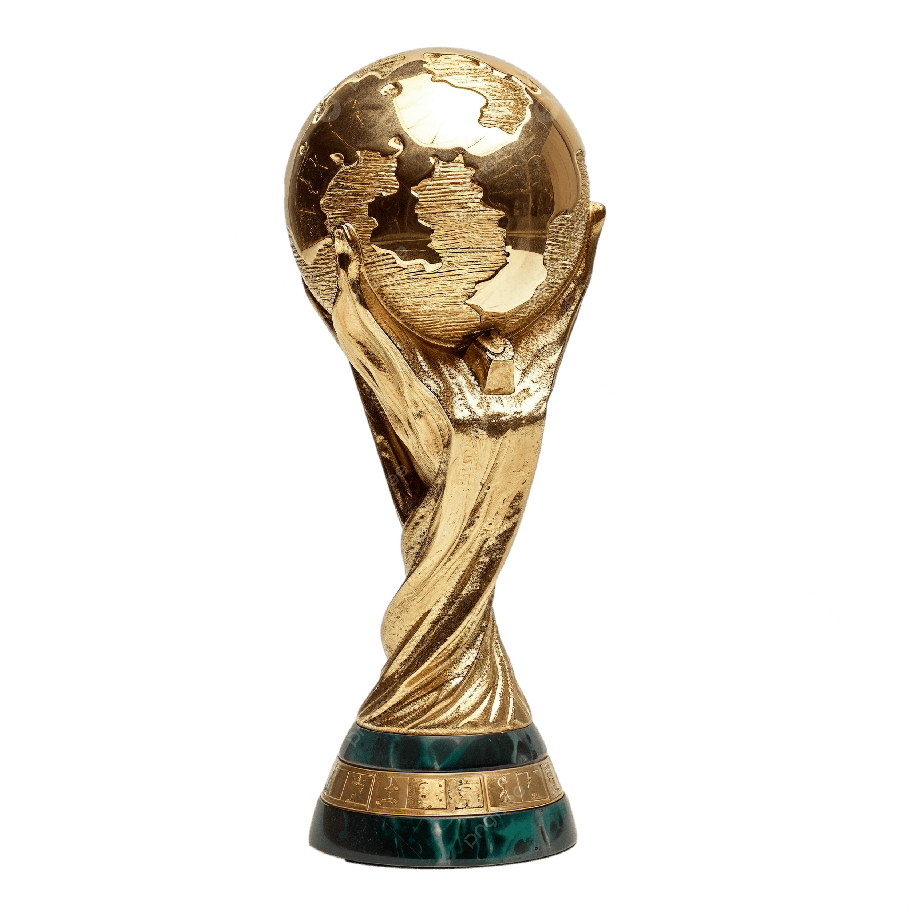
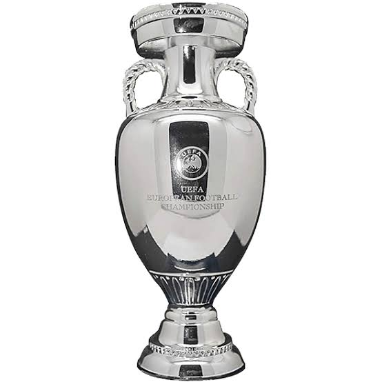
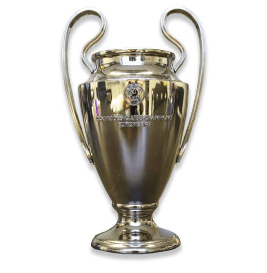
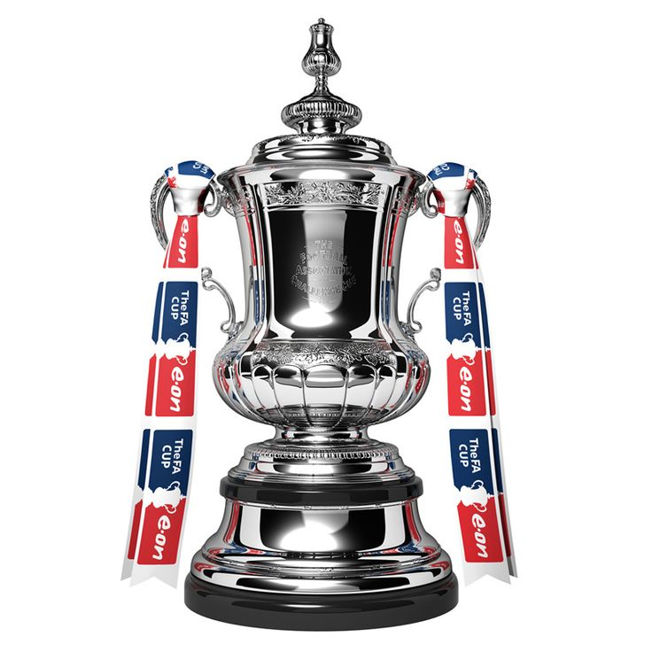

Official Website For Foot Goal

Official Website For Foot Goal
Leyenda del Atlético de Madrid y de la Selección Española





Fernando José Torres Sanz, popularmente conocido como "El Niño", es un ex-futbolista y entrenador español nacido en Fuenlabrada, Madrid, el 20 de marzo de 1984. Jugaba como delantero centro y se formó en las categorías inferiores del Atlético de Madrid, club del cual es uno de sus mayores ídolos históricos. Fue un pilar fundamental de la época más exitosa de la Selección Española absoluta (2008-2012).
"No me llaméis héroe, yo solo juego al fútbol."
Torres debutó con el primer equipo del Atlético de Madrid con tan solo 17 años y pronto se convirtió en el capitán y emblema del club colchonero. En 2007, dio el salto a la Premier League fichando por el Liverpool, donde vivió sus años de mayor esplendor individual, consolidándose como uno de los mejores delanteros del mundo. Posteriormente, fue traspasado al Chelsea en una operación récord en aquel momento. Con el equipo londinense conquistó la FA Cup, la Europa League y la ansiada Champions League en 2012.
A nivel internacional, "El Niño" será eternamente recordado en España por ser el autor del mítico gol frente a Alemania en la final de la Eurocopa 2008, un tanto que cambió la historia del fútbol español. Con "La Roja" conquistó dos Eurocopas (2008 y 2012) y el Mundial de Sudáfrica 2010. Tras pasar brevemente por el AC Milan, regresó a su amado Atlético de Madrid, donde logró levantar la Europa League antes de finalizar su carrera en el Sagan Tosu de Japón.